【要約・構成案】
- 感謝の言葉
- 旅のハイライト
- 結びの言葉
感謝
まず初めに、この度は東京を観光する貴重な機会をくださいました会長に、心より感謝申し上げます。
この3日間の旅は、私にとって非常に思い出深く、決して忘れることのできない大切な経験となりました。
私はこの素晴らしい思い出を胸に刻み、これからの日本での生活や仕事の糧にしてまいりたいと思います。
また、今回の旅を通して、東京の有名な場所を訪れるだけでなく、日本の文化や人々、そして街の雰囲気を実際に肌で感じることができました。
この経験は、日本で生活し働いていく中で、私自身をさらに成長させてくれる貴重な財産になると感じています。
1日目：浅草（5月5日）
初日は、日本の伝統的な風情が色濃く残る街、浅草を訪れました。 都会の喧騒から離れたこの場所では、まるで時間がゆっくりと流れているかのような穏やかな空気を感じることができました。
私が浅草に強く惹かれた理由は、古き良き日本の文化を肌で感じられる点にあります。 この体験を通じて、日本の歴史の深さを再発見することができました。

昼ご飯
出発する前に、私は昼食をとるために「日高屋」に立ち寄りました。 そこで、昔ながらのラーメンと餃子を注文しました。

温かいラーメンと香ばしい餃子はとても美味しく、これから始まる旅への期待をさらに高めてくれました。

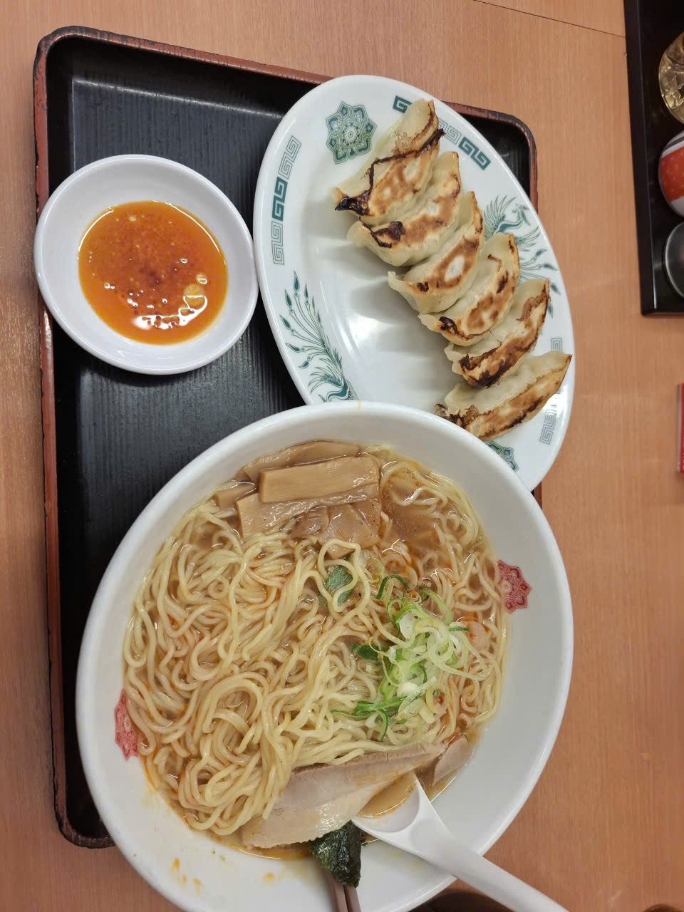
| 料理 | 中華そば ＋ 餃子6個 + ドラゴンチキン |
|---|---|
| 料金 | 1430円 |
| 場所 | 日高屋 稲荷町店 |
効率的に観光するため、東京メトロの700円一日乗車券を購入しました。
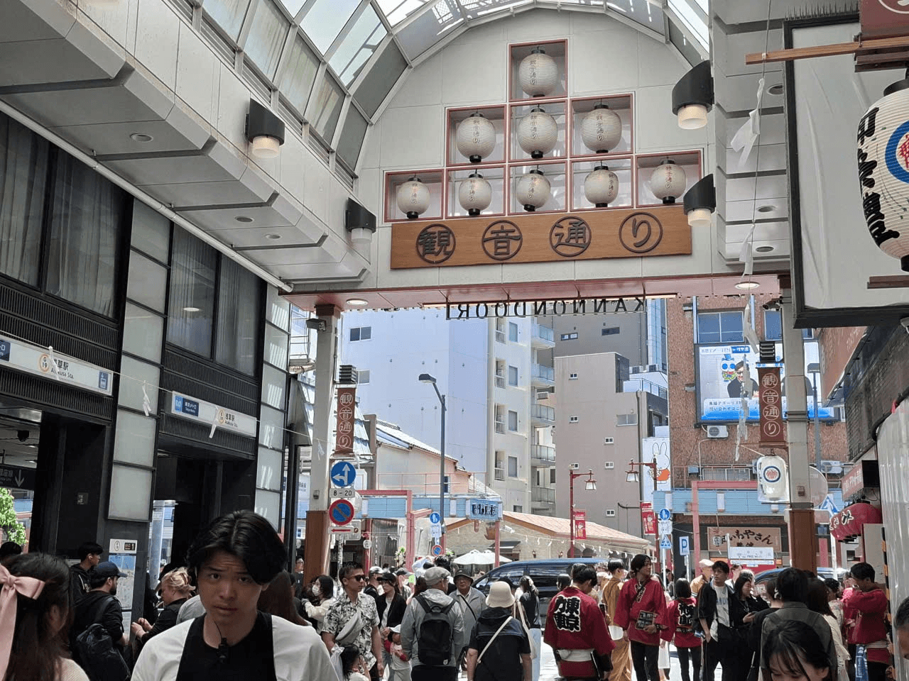
浅草寺へ向かう途中、観音通りを通りました。 伝統的な提灯や観光客で賑わう景色がとても印象的でした。

周囲の景色を眺めながら歩いていると、自分が本当に日本の伝統文化の中に溶け込んでいるような気持ちになりました。
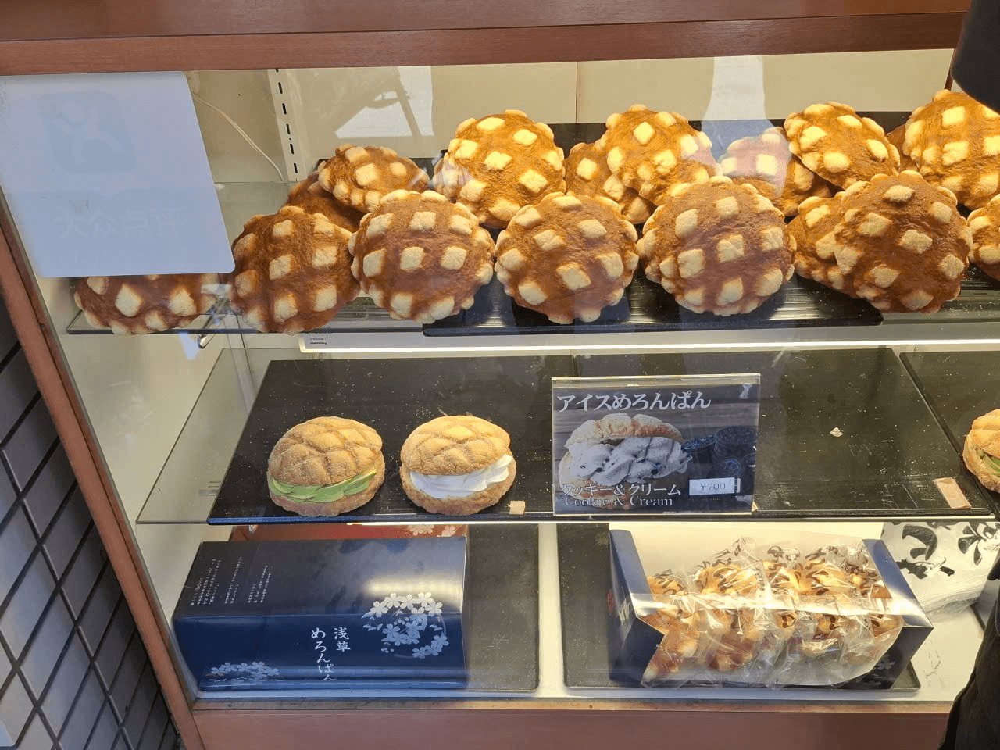
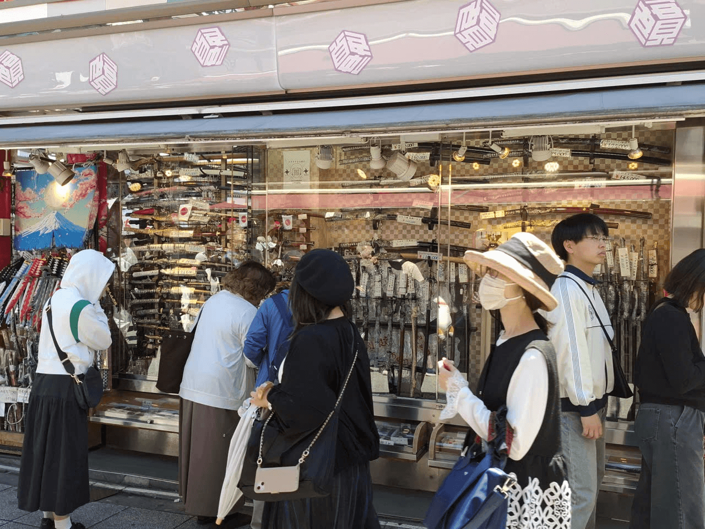
周辺を散策した後、私は浅草を代表する雷門へ向かいました。 大きな赤い提灯と多くの観光客で賑わう景色は、とても浅草らしい活気ある雰囲気を感じさせました。

続いて訪れた「浅草寺」では、歴史ある建築の美しさと、賑わいの中にある厳かな雰囲気に深い感銘を受けました。

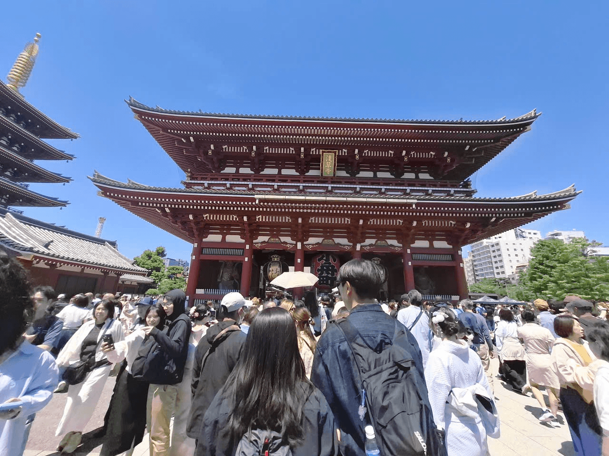
人力車の姿を見て、私は昔の日本の風景を思い浮かべました。 現代的な東京の中でも、人力車の存在は浅草の伝統的で歴史ある雰囲気をより強く感じさせてくれました。
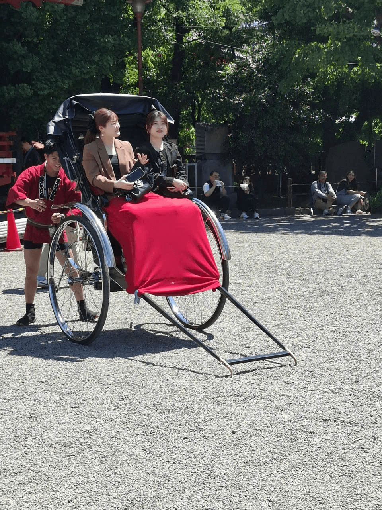
私はお寺でおみくじを引いてみました。 100円を入れておみくじを引いたところ、結果は凶でした。

私はお店でたこ焼きを作る様子を見ることができました。 熱々のたこ焼きが手際よく丸く焼き上げられていく様子は、とても印象的でした。
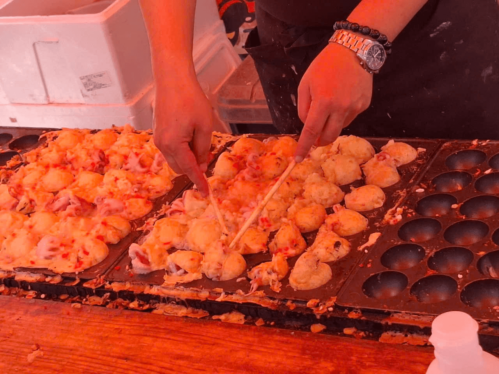
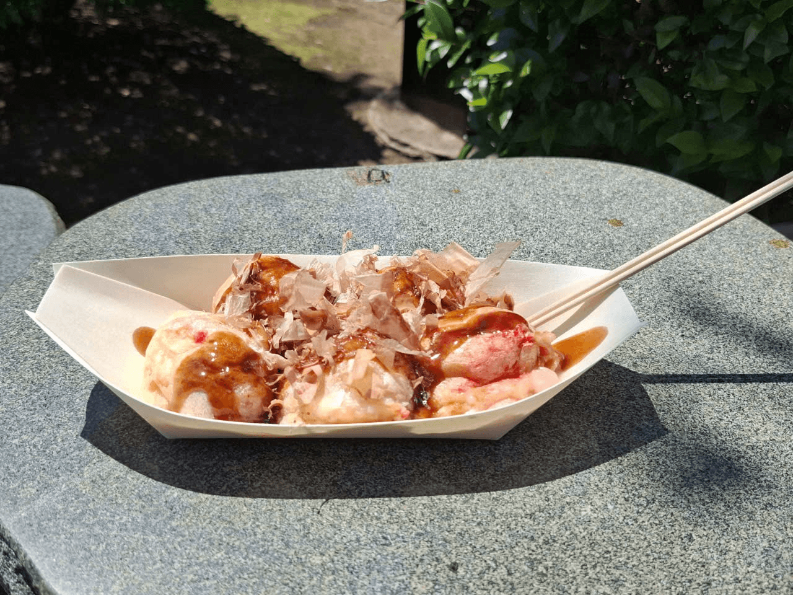
晩ご飯
一蘭での体験は、外国人観光客やあまり会話が得意ではない人にとって、とても素晴らしいものだと感じました。
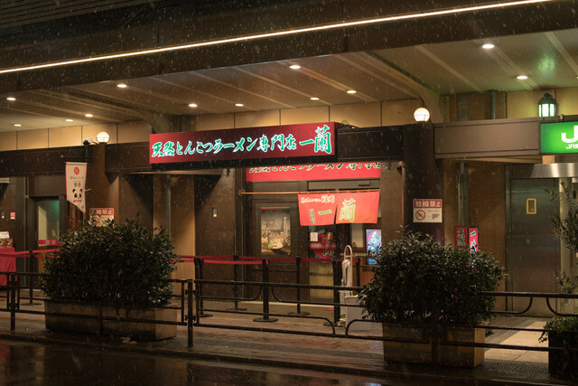
食券機で注文をして、席に座り、料理が来るのを待つだけなので、とても簡単で便利でした。
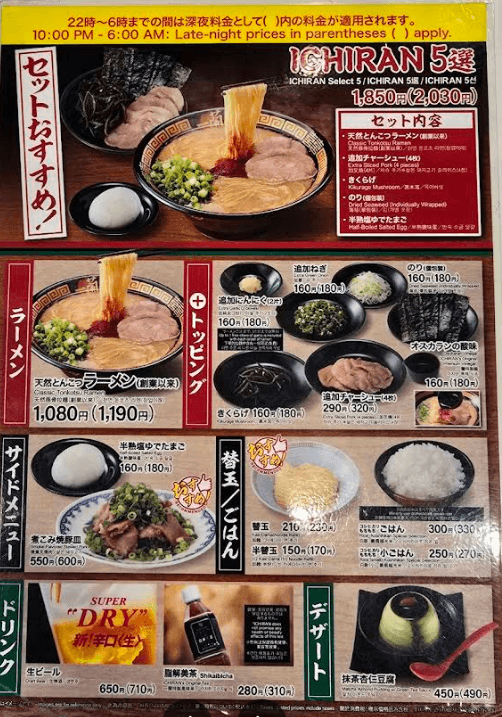
| 料理 | 一蘭5選 + 抹茶アーモンドプリン |
|---|---|
| 料金 | 2580円 |
| 場所 | ICHIRAN Ueno |
2日目：新宿・渋谷（5月6日）
2日目、私は新宿と渋谷を訪れました。 浅草の伝統的な雰囲気とは異なり、ここでは高層ビルや巨大な広告モニター、多くの人々で溢れる東京らしい現代的な景色を感じることができました。

渋谷駅を出た瞬間、多くの人々や巨大な広告モニターが目に入り、東京の賑やかさに圧倒されました。

渋谷で最初に訪れた場所の一つは、有名なハチ公像でした。

ハチ公の忠誠心に関する話を知っていたので、この場所は単なる観光地ではなく、とても特別な意味を持つ場所だと感じました。
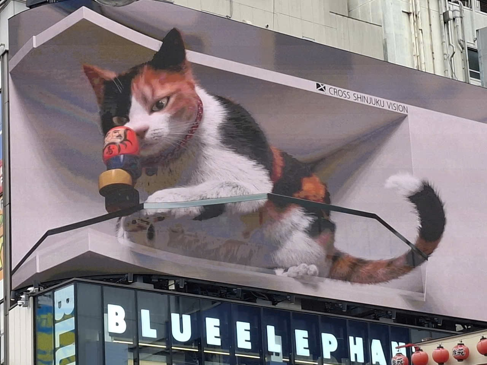
その後、副都心線を利用して新宿へ向かいました。 東京の電車路線はとても複雑ですが、有名なエリア同士の移動は便利で、とてもスムーズでした。
3日目：青山一丁目・秋葉原（5月7日）
最終日は、趣の異なる二つの街を訪れました。
活気あふれる秋葉原では、ネオンや広告が並ぶ日本の現代文化を体感しました。
一方で青山一丁目では、洗練されたオフィス街が広がる落ち着いた都会の空気を感じることができました。

青山散策の合間に「ブルーボトルコーヒー」を訪れました。 木の温もりと青いロゴが印象的なミニマルな空間は、都会の喧騒を忘れさせてくれる落ち着いた場所でした。

秋葉原では「快活CLUB」を体験しました。 豊富なマンガやドリンクバー、ソフトクリーム食べ放題など、非常に快適な空間でした。

上野公園では穏やかな午後の空気を楽しみました。 歩き疲れた後に飲んだ冷たいコーラは、とても美味しかったです。

3日間の総費用
| 日付 | 項目 | 詳細 | 金額（円） |
|---|---|---|---|
| 5月5日 | 昼食 | 日高屋（ラーメン＋餃子＋唐揚げ） | 1430 |
| 交通費 | 東京メトロ1日乗車券 | 700 | |
| 軽食 | たこ焼き | 700 | |
| おみくじ | おみくじ | 100 | |
| 夕食 | 一蘭ラーメン | 2580 | |
| 6月5日 | 朝食 | マルエツのお弁当（50％割引） | 214 |
| 夕食 | 日高屋 | 800 | |
| 7月5日 | 昼食 | 日高屋（中華丼） | 700 |
| 飲み物 | Blue Bottle Coffee | 850 | |
| サービス | 快活グループ | 780 | |
| 電車代 | 神田 ⇒ 青山一丁目、青山一丁目 ⇒ 神田 | 356 | |
| 夕食 | 吉野家 | 762 | |
| 合計 | 9972 | ||
結び
今回の3日間の東京旅行は、私にとって一生忘れることのできない素晴らしい経験となりました。
浅草の伝統から新宿・渋谷の現代的な活気まで、東京の多角的な魅力を深く知ることができました。
このような貴重な機会をくださった会長に心より感謝申し上げます。
この思い出を糧に、これからも日本での仕事や生活に邁進してまいります。